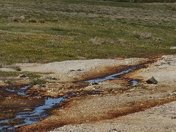
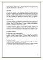
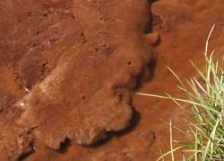
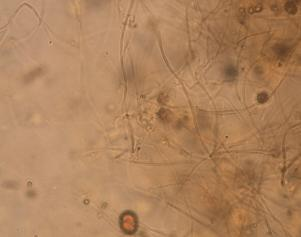
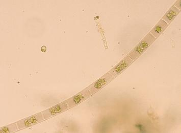
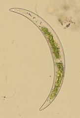

Los Impactos del esquí: un
trampal sepultado y contaminado
Los Impactos del esquí: un
trampal sepultado y contaminado |
 |
|
|
|
| Sedimentos
que han sepultado y destruido el Trampal |
El
día 6 de Mayo cuando regresábamos de la
marcha reivindicativa en contra de la ampliación
de la estación de esquí, nos fijamos (como
se puede ver en las fotos panorámicas), que el
trampal situado al lado del aparcamiento presentaba
dos coloraciones extrañas. Había un área
muy grande de coloración blancuzca entreverada
con coloraciones entre rojizas y marrones, estas últimas
próximas al agua. Al acercarnos se confirmaron
nuestras sospechas. |
El
trampal está semisepultado con depósitos
de arena y piedras. La situación ya se predijo
en las primeras alegaciones de hace años: la
Sierra de Béjar y Candelario está sobre
granitos, la textura de los suelos es arenosa y cualquier
actuación quitando el manto protector de los
piornos en laderas, arrastraría la arena hacia
abajo produciendo un deterioro progresivo de las laderas
por erosión. Las consecuencias eran inevitables
y como los trampales están en el fondo, en la
base de las pistas, los depósitos de arena han
acabado todos allí, COLMATANDO ESTOS ECOSISTEMAS
PROTEGIDOS EN LAS DIRECTIVAS, DESTRUYÉNDOLOS
POR COMPLETO. En pocos años, se colmatan
las antiguas turberas y lo que era un ecosistema muy
valioso se transforma en un erial pobre. Algo que la
naturaleza haría en milenios, lentamente y con
fracciones finas para que la turbera se transformara
en un cervunal en un proceso lento de evolución
y adaptación, se hace a lo bestia en sólo
cuatro o cinco años, condenando a los trampales
a acabar siendo un erial, o mejor dicho, una "escombrera". |
Lo
más indignante de esta situación es que
la Declaración de Impacto Ambiental (DIA) se
lo prohibía expresamente y se
supone que debieran haber adecuado las pistas sin tocar
la vegetación: "Pista
de esquí alpino y pista de entrenamiento para
esquí de fondo y de travesía, superficies
que se acondicionarán sin que sea necesario
el desbroce de la vegetación existente".
Un poco más adelante la DIA dice: "c)
En todos los trabajos de construcción, explotación
y mantenimiento se prestará especial cuidado
y atención a la conservación de
la vegetación y en concreto a los pastizales
de la zona". Y lo vuelve a reiterar:
"l) Con el fin de no
afectar de manera crítica a las interesantes
poblaciones de anfibios y reptiles del área del
proyecto, no se podrá efectuar ninguna
actuación que suponga una eliminación
de la cubierta vegetal o de la actual estabilidad del
terreno, evitando así, por otra
parte, el desencadenamiento de fenómenos
erosivos".
Como vemos las medidas preventivas, correctoras y/o
compensatorias no son meros adornos de las DIA´s,
aunque así se las tomen tanto gestores-promotores,
como el Servicio Territorial de Medio Ambiente de Salamanca,
y su INCUMPLIMIENTO, acarrea graves
consecuencias.
|
Recientemente
GECOBESA (que acusa de mentir a todo el que se opone
o crítica sus pretensiones, así como al
que denuncia sus acciones) hacía unas declaraciones
a los medios informativos en las que afirmaba que "la
gestora de la estación de esquí siempre
ha respetado el medio ambiente" (ver
noticia) . Sería
más fácil creerles si sus hueras palabras,
estuvieran avaladas con hechos. |
|
|
¿Queremos
convertir "La Cardosa"... |
En
¡ESTO!? |
|
| ¿Vertidos
en las inmediaciones del aparcamiento? |
Sorprendidos
por la coloración rojiza que presentaba el
Trampal, y que avezados montañeros no habían
contemplado nunca, nos dirigimos a realizar una inspección
ocular. Tal inspección se convirtió
en inspección olfativa porque el hedor que
se desprendía en algunas zonas era nauseabundo.
En las aguas, como podéis ver en las fotos
de detalle, había bastante profusión
de "mohos" y en algunas zonas presentaban
iridiscencias semejantes a las que dejan las "grasas"
o "aceites". Si a esto añadimos que
recientemente los organismos que velan por el medio
ambiente, han denunciado a la empresa por vertido
de aguas fecales en el Arroyo del Oso, todo
apunta a que ambos hechos puedan estar relacionados.
|
Volvimos
para recoger muestras el viernes 18 de mayo para su
análisis al microscopio a cargo de una limnóloga
(Limnología)
de la Universidad de Salamanca. Recogimos dos muestras
del trampal, una, recogida en la zona degradada, donde
había proliferación de esos "mohos"
y otra de agua limpia del trampal, de la zona más
cercana al refugio de "Las Cimeras". La muestra
de la zona bien conservada se ha tomado como referencia
de las condiciones ambientales normales
del trampal |
Los
resultados del análisis, aportan suficientes
indicios para sospechar que tales vertidos se han producido. |
En
la zona degradada
del trampal existen masas mucilaginosas de color ocre,
a las que se asocian otros hongos microscópicos
y muchos zooflagelados. Además el agua presenta
gran cantidad de materia orgánica amorfa,
en proceso de descomposición. Las microalgas
fueron poco abundantes a excepción de
las euglenofitas, que estan asociadas en general
a ambientes ricos en materia orgánica. |
En
la zona no degradada,
se observaron algunas larvas de cladóceros
y algunos rizópodos (Tecamebas) de la
especie A. Gibbosa, característica
de zonas turbosas. A diferencia
de la muestra de la zona degradada, aqui aparecieron
también varias especies de algas filamentosas. |
| Podemos
concluir que
las comunidades de microorganismos son diferentes en la
zona degradada y en la no degradada, las principales diferencias
son: |
- Las
masas mucilaginosas presentes en la zona degradada.
- La
gran abundancia de cilíados, zooflagelados
y rotíferos en la zona degradada, cuya proliferacion
puede deberse a una respuesta al desarrollo de las
masas mucilaginosas.
- La
abundancia de euglenofitas en la zona degradada.
Son algas que proliferan normalmente en ambientes
de gran cantidad de materia orgánica.
- En
la muestra de la zona NO degradada
aparecieron varias especies de algas filamentosas,
que no existían en la zona degradada.
|
| Es
hora ya de que las autoridades ambientales de esta provincia
y de esta región, tomen cartas en el asunto, investiguen
y sancionen, en su caso, a los que destruyen habitats
tan frágiles, recogidos para su protección
en las directivas europeas, y en su trasposición
a nuestra normativa. |
Informe
sobre las muestras de agua del Trampal
|
| Para
saber más puedes consultar el informe sobre
las aguas del trampal (Haz clik en
la imagen) |
 |
 |
 |
| Masa
mucilaginosa |
Detalle
al microscopio |
 |
 |
| Algas
zigofíceas que solo aparecieron en la zona
no degradada |
|
| Álbum
fotográfico |
|
|
|
|
|
|
|
|
|
|
Las
imagenes panorámicas no dejan lugar
a dudas. Los impactos de los movimientos
de tierra y creación de taludes
producen unos fenómenos erosivos
y de escorrentía, que terminan
sepultando los trampales. ¿Queremos
también esto en "La Cardosa"? |
|
|
|
|
|
|
|
|
|
|